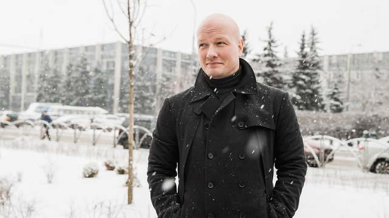

Никита Панфилов Владиславович
Известен в сериале «Пуля» как: Кирилл Романов.

Описание Сериала:
Главный герой — командир отряда специального назначения ГРУ, майор Кирилл Романов (Никита
Панфилов), получает таинственное сообщение от виновника смерти его матери.
В письме сообщается, что автор не причастен к её кончине.
Кирилл в замешательстве, он решает прервать военный контракт и вернуться в Москву, чтобы
встретиться с преступником лично и узнать подробности трагедии, которая произошла в Сибири, на
месте, где собиралась базироваться нефтяная компания.
Больше двадцати лет прошло с той страшной ночи, когда во время пожара погибла мать Романова, и
новые обстоятельства побуждают Кирилла провести собственное расследование трагедии.
Для этого он устраивается работать в ту самую нефтяную компанию, где узнает, что на предприятии
происходят странные события.
Там же он знакомится с Дашей (Иева Андреевайте), родственники которой погибли при тех же
обстоятельствах, что и мать Кирилла.